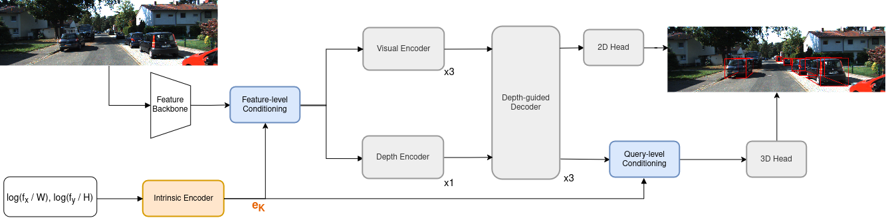
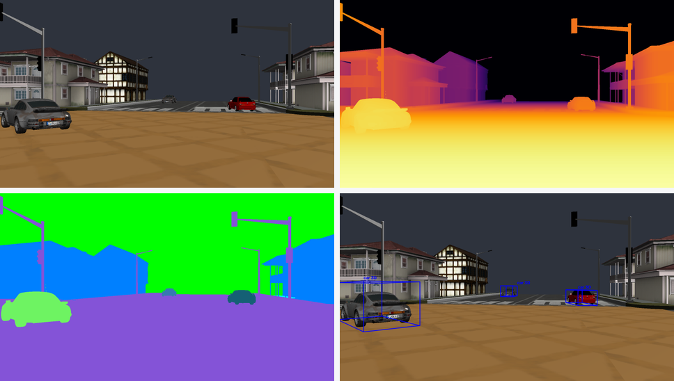
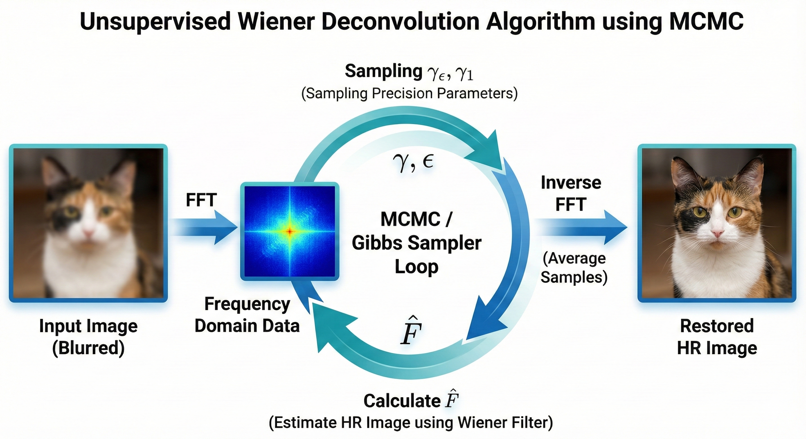
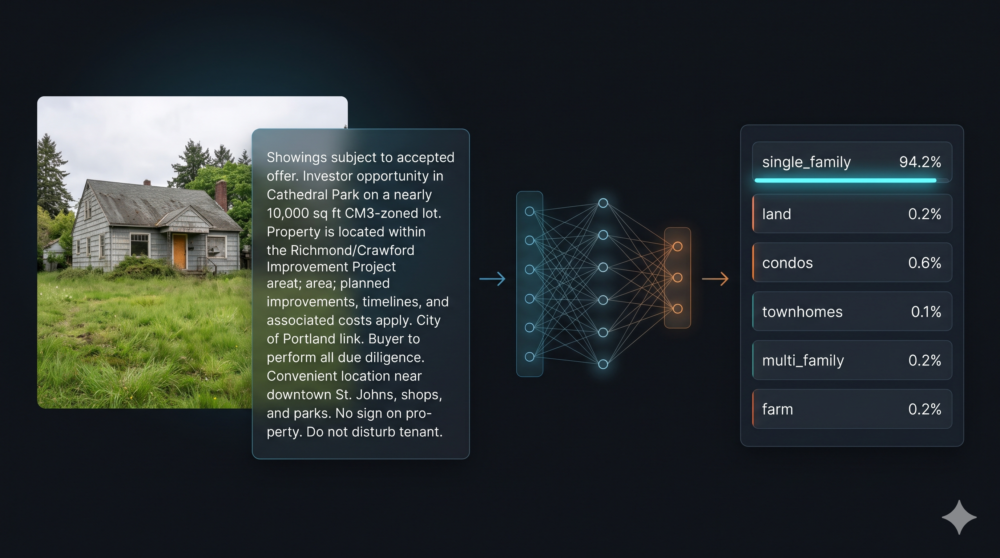

Quoc Huy Nguyen Nguyễn Quốc Huy
B.Sc. in Computer Science (Honors Program) · HCMUT – VNU-HCM
I am a final-year undergraduate student in the Computer Science Honors Program at Ho Chi Minh City University of Technology (HCMUT) – VNU-HCM (GPA: 3.8 / 4.0), where I work as an Undergraduate Researcher at AITech Lab advised by Dr. Duc Dung Nguyen. My research focuses on 3D Vision and Spatial Intelligence.
Currently, I am conducting joint research in collaboration with AITech Lab (HCMUT) and AISIN Corporation, working with Dr. Duc Dung Nguyen and Dr. Truong Vinh Truong Duy on viewpoint-aware and viewpoint-agnostic 3D object detection — developing unified 3D perception models capable of detecting objects across diverse camera mounting perspectives, including vehicle-side, road/infrastructure-side, and drone-side viewpoints. In Summer 2026, I also worked as a Computer Vision Intern at Anh Khoi Technology, building multi-camera 3D calibration systems.
I am open to research collaborations, graduate opportunities, and AI / Computer Vision engineering roles. Feel free to reach out!
Research
My long-term goal is to build computational models that perceive, reason about, and predict the physical 3D world. Concretely, I work on:
- 3D Vision. Monocular 3D object detection, 3D understanding, and multi-modal 3D perception for autonomous driving and beyond.
- Spatial Intelligence. Spatial reasoning, 3D grounding, and geometry-aware representations in vision-language models.
News
-
Our paper MonoBEN (Monocular 3D Object Detection Beyond Fixed Camera iNtrinsics) has been accepted at IEEE RIVF 2026! New
-
Joined Anh Khoi Technology as a Computer Vision Intern for Summer 2026, working on multi-camera 3D calibration.
-
Started joint research collaboration with AITech Lab (HCMUT) and AISIN Corporation on cross-sensor and viewpoint-agnostic visual 3D object detection across diverse camera setups and viewpoints.
-
Joined AITech Lab (HCMUT – VNU-HCM) as an Undergraduate Researcher advised by Dr. Duc Dung Nguyen.
Selected Publications
-

MonoBEN: Monocular 3D Object Detection Beyond Fixed Camera iNtrinsics
IEEE RIVF 2026 Accepted
- Formulates camera intrinsics as a continuous geometric manifold via a lightweight MLP over log-normalized focal parameters (rx = fx/W, ry = fy/H), hierarchically conditioning visual features and object queries without external LLMs, vision-language encoders, or discrete lookup tables.
- Surpasses both paper-reported MonoIA (22.77% vs. 22.08% AP3D, peaking at 24.83% at 850 px) across 9 interpolated focal lengths and reproduced MonoIA† on out-of-range extrapolated focals (21.01% vs. 18.75% at 600 px; 19.85% vs. 19.16% extrapolated average), achieving 21.97% average AP3D across all 17 focal lengths (600–1400 px).
- Acts as a geometry-aware regularizer on standard fixed-camera KITTI, improving over its base detector MonoCoP in 10 of 12 metrics (+1.06 Easy AP3D and 37.69% Easy APBEV on Test; 24.20% Moderate AP3D on Val) while maintaining parameter and FLOP parity (42.37M params, 71.77 GFLOPs) with zero added inference overhead.
Project Page Paper (Camera-Ready Soon)

* denotes corresponding author.
Selected Projects
-

VisionDrive3D: Synthetic Driving-Scene Data & Perception Evaluation
Computer Graphics Course Project OpenGL · Synthetic Data · 2D/3D Perception
- Built an OpenGL driving-scene simulator with configurable traffic flows, urban layouts, and camera viewpoints to synthesize synchronized RGB frames, depth maps, instance-segmentation masks, and 2D/3D bounding boxes.
- Automated COCO/YOLO/KITTI annotation export pipelines, deterministic train/val/test dataset splits, and headless batch rendering for reproducible benchmark generation.
- Benchmarked YOLO26 and RT-DETRv2-S object detection models on synthetic driving scenes, analyzing mAP, inference throughput, and accuracy–latency trade-offs.
-

Bayesian Wiener-Hunt Deconvolution: Traditional Image Super-Resolution & Restoration
Image Processing & Computer Vision Project Bayesian MAP · MCMC Gibbs Sampler · FFT
- Implemented an unsupervised Wiener-Hunt deconvolution framework in NumPy and SciPy, overcoming the classical Wiener filter's reliance on manual tuning of the signal-to-noise ratio constant K.
- Formulated image restoration in a Bayesian Maximum A Posteriori (MAP) framework with a 2D Laplacian regularization operator in the Fourier domain to preserve structural edges while suppressing high-frequency noise.
- Developed an MCMC (Gibbs Sampler) leveraging conjugate Gamma distributions to dynamically sample noise precision (γε) and prior precision (γ1), computing the posterior mean via accelerated
rFFTn/irFFTnoperations.
-

RealEstateText: Transformer-Based Text Classification
Deep Learning Course Project PyTorch · BERT · DistilBERT
- Fine-tuned BERT and DistilBERT models in PyTorch across 13 experimental training configurations and hyperparameter settings.
- Achieved 90.94% accuracy and 80.88% Macro F1-score on real-estate text classification benchmarks, with an interactive web application deployed on Hugging Face Spaces.


Research & Industry Experience
-
Undergraduate Researcher
AITech Lab (HCMUT) × AISIN Corporation
Advisors: Dr. Duc Dung Nguyen, Dr. Truong Vinh Truong Duy
- Researching viewpoint-aware and viewpoint-agnostic 3D object detection, designing unified 3D detection models capable of generalizing across vehicle-side, road/infrastructure-side, and drone-side camera perspectives.
- Investigating cross-sensor and cross-dataset visual 3D detection (building upon Cross-Dataset Sensor Alignment) to align camera intrinsics, extrinsics, and ego-coordinate frames across diverse autonomous driving and urban perception platforms.
-
Computer Vision Intern
Anh Khoi Technology · Ho Chi Minh City, Vietnam
- Built an end-to-end multi-camera 3D calibration pipeline leveraging human-motion videos to estimate camera intrinsic/extrinsic parameters and align multiple viewpoints in a unified 3D coordinate system.
- Combined MediaPipe 2D keypoints, OpenCV, RANSAC outlier rejection, and Ceres Solver bundle adjustment with automated keyframe selection and confidence-weighted optimization.
- Curated a dedicated multi-view test dataset to evaluate calibration error tolerances and containerized the entire pipeline with Docker for reproducible client deployment and handover.
-
Undergraduate Researcher
AITech Lab, Ho Chi Minh City University of Technology (HCMUT) – VNU-HCM
Advisor: Dr. Duc Dung Nguyen
- Investigated performance degradation mechanisms of monocular 3D detectors under unseen camera intrinsics and formulated continuous log-normalized focal length manifold encoding (MonoBEN).
- Conducted extensive cross-focal and standard benchmark evaluations on KITTI and authored a first-author paper accepted at IEEE RIVF 2026.
Education
-
B.Sc. in Computer Science — Honors Program
Ho Chi Minh City University of Technology (HCMUT) – VNU-HCM · Vietnam
GPA: 3.8 / 4.0 (8.88 / 10.0)
- Relevant Coursework: Machine Learning, Deep Learning, Computer Vision, Computer Graphics, Linear Algebra, Probability & Statistics, Data Structures & Algorithms.
Honors & Awards
-
First Author
First-Author Paper Accepted at IEEE RIVF 2026
IEEE International Conference on Computing and Communication Technologies (RIVF)
-
Merit Scholarship
Academic Excellence Scholarship (3 Semesters)
Ho Chi Minh City University of Technology (HCMUT) – VNU-HCM
-
GPA 3.8 / 4.0
Computer Science Honors Program
Faculty of Computer Science and Engineering, HCMUT – VNU-HCM